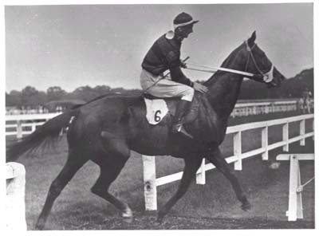

From: tommothompson***tiscali.co.uk
I am looking to find some information on my Grandfather Richard Cullen. He was born around the Limerick area of Eire in 1907. He married Kathleen Flanagan (dressmaker) and had four children. They lived in the Kildare area. Richard Cullen was a Jockey riding on the flat. In 1933 he moved out to India where he rode with a great deal of success until his death following a fall during a race on February 1'st 1937. He was buried at St Paul's RC Church, Dilkusha, Lucknow on 2'nd February 1937. Kathleen and the children later moved to England.

Has anyone on this site got any information on Richard Cullen? I would appreciate anything no matter how small.
From: Christina.Koivisto***Kolumbus.FI
I am looking for information on my great aunts and any other members of the family anywhere. The three girls, were:
Mary b. April 1st.1863
Bridget b. Jan. 3rd. 1868.
Julia ?
They were the children of Patrick Cullen & Catherine Lennox from Rathconnell, Nurney, Co.Kildare. The 3 girls were taken to America at a young age by relatives. There were two other children; Etna, who died young, and my grandfather William. Any information is greatly appreciated.
From: wish2bhome***hotmail.com Husband: Frank CULLEN b.c. 1825 County Kildare d. Dec 23, 1895 in New Orleans, LA USA. Wife: Catherine Coleman b.c. 1830 Queens County Ireland d. Nov 10, 1910 in New Orleans, LA. USA.
Children:
James W. Cullen: b.c. 1873 d. 1875 New Orleans.
Mary Elizabeth (Lizzie): b.c. March 1, 1863 d. September 21, 1939 m. William Glennon Jan 28, 1892 in New Orleans, LA USA
Any information regarding this family is appreciated. Thanks
From: Millicent Knight: MKnight64***aol.com
Husband: William Cullen (b.c. 1841 in IRE - d. 19 Aug 1899 in Montreal)
Wife: Jane Coogan ( b.c. 1843 in IRE - d. 1 May 1908 in Montreal).
Children:
Rose Anna CULLEN b. 24 Aug 1865 in Celbridge - d. 20 Jun 1964 in Ottawa, Candada. - m. Louis Joseph Cyprian GAGNON and had four children: Mary Louise, James L., Irene, and Ethel.
unnamed CULLEN b. 7 Aug 1867 - Celbridge.
Patrick CULLEN b.c. 1869.
Lawrence CULLEN b.c. 1871.
Beatrice Winfield CULLEN b. 3 Oct 1875 prob. in IRE.
Jane (Jennie) CULLEN b. 15 Aug 1876 prob. in IRE. m. James John CORCORAN and had two sons: James (d. 1927 in Canada), and William James (d. 1982 in Canada).
John CULLEN b. c. 1880 prob. in IRE - d. 28 Apr 1919 in Canada
The above family emigrated to Canada about 1885 and appear in the 1891 census in Montreal. I would love to know more about where William came from or anything else about this family.